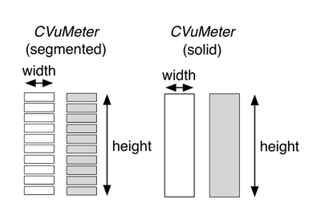

- Generated by
 1.9.6
1.9.6
|
ASPiK SDK
|
CVUMeter
The CVuMeter object encapsulates a VU meter that is made from individual virtual LEDs, however you can also easily create solid-filled meters as well which appear a bit more modern these days.
 The figure above depicts the two graphics files for this object when displayed as a segmented meter. For this example we observe: The figure on the left depicts a graphics file for either of these objects. For this example we observe:
• There are two graphics files needed, one for the off state (all LEDs off) and one for the on state (all LEDs on); both files are the same dimensions in pixels
• The width is the width of either of the graphics files in pixels
• The height is the height of either of the graphics files in pixels
• The LED meters are made up of some number of individual virtual LEDs
• This example shows a vertical meter; the horizontal meter is also possible
When you setup a VU meter object in the GUI designer, you will drag and drop a CVuMeter onto the canvas. You will then need to set the following parameters in the control’s attribute fields:
• orientation: vertical or horizontal
• size: the width, height pair separated by a comma (e.g. 60,20)
• bitmap: the name of the PNG graphic file associated with the control showing the VU meter with all LEDs in the ON state
• off-bitmap: the name of the PNG graphic file associated with the control showing the VU meter with all LEDs in the OFF state
• num-led: the number of virtual LEDs on the meter (10 in the figure above)
• control-tag: the controlID value that links this control to a plugin parameter
The figure on the right side depicts the two graphics files for this object when displayed as a solid meter. Here we can play a simple trick with the object and display a continuous, non-segmented meter. In this case, we use two graphics files. The off-state image just shows a rectangle filled with the off-color (usually this is either transparent, or a darker color than the on-state) while the on-state image is just the same rectangle filled with our on-color. In this case, the trick is to set the num-led attribute to be identical to the height of the graphic in pixels. This produces a smooth and continuous solid filled meter with a simple graphic file design – just a couple of rectangles. This is the type of meter we will use in our plugin GUIs – it is simple to create, and it looks like the kind of meters we see on other hardware and software devices.